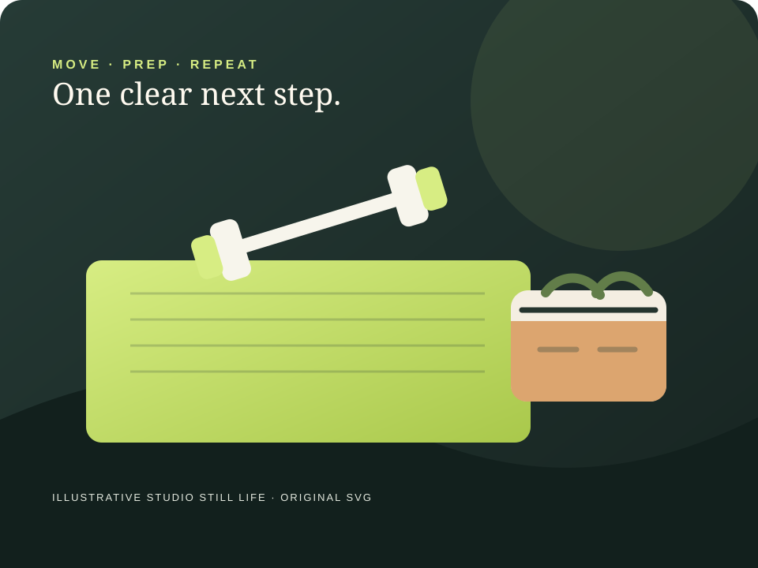

01 PERSONAL TRAINING
Ask about a training session.
A simple inquiry can help someone learn what the service includes and what to ask next.
See a sample inquiryA thoughtful place to begin
A fictional movement studio example, with a clear path to ask about personal training and a separate, optional meal-prep offering.
See the example offeringsA SAMPLE EXPERIENCE · NO BOOKING OR SERVICE CLAIM

One clear conversation at a time
This made-up example keeps personal training and optional meal prep separate, so each offering can be described on its own terms.
01 PERSONAL TRAINING
A simple inquiry can help someone learn what the service includes and what to ask next.
See a sample inquiry02 OPTIONAL · MEAL PREP
Menu, ordering and pickup details belong in a separately agreed scope. No food, nutrition, allergy or health claims are shown here.
Read the scope noteTraining and meal prep are different service scopes in this example. The page collects no health, body, dietary or allergy details.
The owner side · phone practice
Try a fictional inquiry, shape a reply and keep the service instructions clear. Every change stays in this browser page until reload.
Nothing here contacts a person or provider. No inquiry is sent, appointment booked, account created, payment taken or page published.
Personal training · first question
“I’d like to understand what a first conversation covers. What should I ask?”
Service: Personal training (fictional sample)
Example follow-up: Clarify the service format and next conversation step.
Contact: Fictional inquiry. No name, address or contact method is represented.
Status is shown in this practice only.
Browser-only review state · unsent · unpublished · no storage